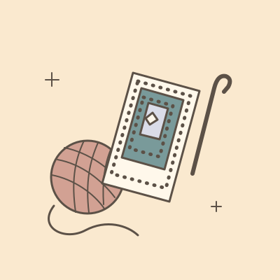
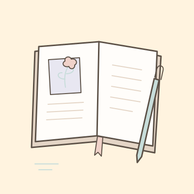

A little background
About me
I’m Cecilia, a data scientist and engineer with experience in energy forecasting, operational analytics, and data pipelines.
I studied Data Science and Cognitive Science at UC San Diego, combining statistical modeling with a human-centered approach to design.
UC San Diego ’26 · Dual B.S. · Cum Laude
Full résuméAlong the way
Experience
Associate Quantitative Analyst
Sep 2026 — PresentPacific Gas and Electric Company
Data Analyst Intern
Sep 2025 — Sep 2026Genesys Works
Operations Data Analyst Intern
Jun — Aug 2025Pacific Gas and Electric Company
Product Analyst Intern
Mar — Jun 2025Plants Without Borders
Off the clock
Hobby albums
Open an album to take a look.
a few favorites ♡
Crochet & Knitting
Open albumClose album
One stitch at a time

PhotographyOpen albumClose album
Little things I notice
Journaling
Open albumClose album
Pages from my day
My CatsOpen albumClose album
My favorite company
Illustrated covers and pages for now. Personal photos to come.
Contact